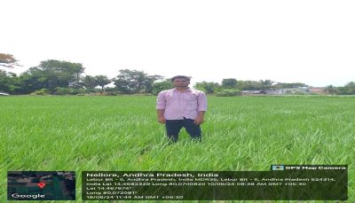

WEEKLY REPORT
WEEK- 6 (From 17-06-24 to 22-06-24)
Objective of the Activity Done: Educated community members on the principles and benefits of organic paddy farming:
Detailed Report:
Day 1:
- >IRRIGATION is one of the most important aspects of every farmer s life.
- >It is something that is necessary for the survival of crop and giving water to crop.
- >Irrigation has been derived from two Latin words ‘moist’ and ‘wet’.
- >It means that the purposeful wetting of land or something’.
- >So, meaning of irrigation is ‘watering of land by artificial means to foster plant growth '.
Day 2:
- The main types of irrigation in India:
- >Center-pivot irrigation.
- >Subirrigation.
- >Drip irrigation
- >Irrigation sprinkler
- >Gravity Irrigation
Day 3:
- Irrigation preparation:
- >Before giving water to the land, we have to remove the sagebrush.
Day 4:
- Different methods of irrigation in India:
- >Traditional irrigation.
- >Modern Irrigation.
- >Traditional irrigation also called as pully system. It involves pulling up water from a well.
Day 5:
- >Jain irrigation system limited.
- >Netafim.
- >Valmont industries induction.
Day 6:
- >People depend on a wide range of irrigation systems in almost all aspects of cropping.
- >Nutrition is an also supplied through irrigation .
- >Provider of sufficient water to crops and land.
- >irrigation improves crop growth and quality in all aspects.

